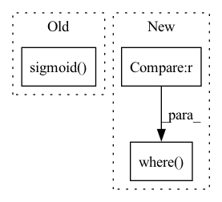

Pattern ID :7039
Before Change
edge_attr = self.explain_edges_with_loop(x, walks, ex_label)
mask = edge_attr
mask = self.control_sparsity(mask, kwargs.get("sparsity"))
mask = mask.sigmoid()
masks.append(mask.detach())
related_preds = self.eval_related_pred(x, edge_index, masks, **kwargs)
After Change
self.subset, _, _, self.hard_edge_mask = subgraph(
node_idx, self.__num_hops__, edge_index_with_loop, relabel_nodes=True,
num_nodes=None, flow=self.__flow__())
self.new_node_idx = torch.where(self.subset == node_idx ) [0]
// walk indices list mask
edge2node_idx = edge_index_with_loop[1] == node_idx
In pattern: SUPERPATTERN
Frequency: 4
Non-data size: 3
Instances Fragment ID: 23434357
Project Name: divelab/dig
Commit Name: d2838464a04282f7b1b6e3a98cdec42f3a3a29c7
Time: 2022-05-25
Author: haiyang@tamu.edu
File Name: dig/xgraph/method/gnn_lrp.py
M Class Name: GNN_LRP
N Class Name: GNN_LRP
M Method Name: forward(3)
N Method Name: forward(3)
M Parent Class: WalkBase
N Parent Class: WalkBase
M File Name: dig/xgraph/method/gnn_lrp.py
N File Name: dig/xgraph/method/gnn_lrp.py
M Start Line: 68
M End Line: 205
N Start Line: 67
N End Line: 211
Before Change
def activate_grad(inp: jnp.ndarray) -> jnp.ndarray:
gate = lax.tanh(softplus(inp))
sigmoid = jax.nn.sigmoid( inp)
return (1 - sigmoid) * gate + sigmoid * (inp + gate - gate ** 2 * inp)
def activate(ctx: Context, inp: jnp.ndarray) -> jnp.ndarray:After Change
def activate_grad(inp: jnp.ndarray) -> jnp.ndarray:
return jnp.where(inp < 0 , 0.01, 1)
def activate(ctx: Context, inp: jnp.ndarray) -> jnp.ndarray:
if ctx.is_initializing: Fragment ID: 23434356
Project Name: homebrewnlp/homebrewnlp-jax
Commit Name: 3b85d5a95e15aae8898f2ce9fd9be106047444cd
Time: 2022-08-24
Author: 39779310+ClashLuke@users.noreply.github.com
File Name: src/model/activate.py
M Class Name: AnonimousClass
N Class Name: AnonimousClass
M Method Name: activate_grad(1)
N Method Name: activate_grad(1)
M Parent Class:
N Parent Class:
M File Name: src/model/activate.py
N File Name: src/model/activate.py
M Start Line: 16
M End Line: 18
N Start Line: 12
N End Line: 12
Before Change
edge_attr = self.explain_edges_with_loop(x, walks, ex_label)
mask = edge_attr
mask = self.control_sparsity(mask, kwargs.get("sparsity"))
mask = mask.sigmoid()
masks.append(mask.detach())
related_preds = self.eval_related_pred(x, edge_index, masks, **kwargs)
After Change
self.subset, _, _, self.hard_edge_mask = subgraph(
node_idx, self.__num_hops__, self_loop_edge_index, relabel_nodes=True,
num_nodes=None, flow=self.__flow__())
self.new_node_idx = torch.where(self.subset == node_idx ) [0]
if kwargs.get("walks"):
walks = kwargs.pop("walks")
Fragment ID: 23434358
Project Name: divelab/dig
Commit Name: d2838464a04282f7b1b6e3a98cdec42f3a3a29c7
Time: 2022-05-25
Author: haiyang@tamu.edu
File Name: dig/xgraph/method/gnn_gi.py
M Class Name: GNN_GI
N Class Name: GNN_GI
M Method Name: forward(3)
N Method Name: forward(3)
M Parent Class: WalkBase
N Parent Class: WalkBase
M File Name: dig/xgraph/method/gnn_gi.py
N File Name: dig/xgraph/method/gnn_gi.py
M Start Line: 69
M End Line: 121
N Start Line: 68
N End Line: 124
Before Change
else:
raise ValueError("reduction should in ("mean", "sum")")
if with_logits:
y_pred = torch.sigmoid( y_pred)
y_pred = torch.clamp(y_pred, 1e-6, 1 - 1e-6)
// 前式与后式关于0.5对称(The former and the latter are symmetric about 0.5)
// y_true 为-1. 即: 既不是正样本、也不是负样本。After Change
// target == -1. It"s neither a positive sample nor a negative sample.
return torch.sum(
torch.where(target == -1 , torch.tensor(0., device=target.device),
alpha * (1 - pred) ** gamma * target * torch.clamp_max(-torch.log(pred), 100) +
(1 - alpha) * pred ** gamma * (1 - target) * torch.clamp_max(-torch.log(1 - pred), 100)) )
class FocalLoss(nn.Module): Fragment ID: 23434355
Project Name: jintao-huang/efficientdet_pytorch
Commit Name: b140444fc9d402a1206ec4a8d6e0514b82003371
Time: 2021-03-31
Author: hjt_study@qq.com
File Name: models/loss.py
M Class Name: AnonimousClass
N Class Name: AnonimousClass
M Method Name: weighted_binary_focal_loss(4)
N Method Name: weighted_binary_focal_loss(6)
M Parent Class:
N Parent Class:
M File Name: models/loss.py
N File Name: models/loss.py
M Start Line: 9
M End Line: 32
N Start Line: 21
N End Line: 24